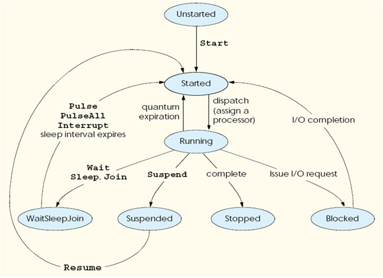

Chapter 14 - Building Multithreaded Applications
Content
This chapter builds on your newfound knowledge by examining how the .NET platform allows you to build multithreaded applications and how to keep shared resources thread-safe.
The Process/AppDomain/Context/Thread relationship
The System.Threading namespace contains various types that allow you to create multithreaded applications.
The Thread class is perhaps the core type, as it represents a given thread. If you wish to programmatically obtain a reference to the thread currently executing a given member,
simply call the static Thread.CurrentThread property.
Under the .NET platform, there is not a direct one-to-one correspondence between application domains and threads.
In fact, a given AppDomain can have numerous threads executing within it at any given time.
Furthermore, a particular thread is not confined to a single application domain during its lifetime.
Threads are free to cross application domain boundaries as the Win32 thread scheduler and CLR see fit.
Although active threads can be moved between AppDomain boundaries, a given thread can execute within only a single application domain at any point in time
(in other words, it is impossible for a single thread to be doing work in more than one AppDomain).
When you wish to programmatically gain access to the AppDomain that is hosting the current thread, call the static Thread.GetDomain()method.
A single thread may also be moved into a particular context at any given time, and it may be relocated within a new context at the whim of the CLR.
When you wish to obtain the current context a thread happens to be executing in, make use of the static Thread.CurrentContext property.
Again, the CLR is the entity that is in charge of moving threads into (and out of ) application domains and contexts.
As a .NET developer, you can usually remain blissfully unaware where a given thread ends up (or exactly when it is placed into its new boundary).
Nevertheless, you should be aware of the various ways of obtaining the underlying primitives.
The System.Threading namespace
The System.Threading namespace provides a number of types that enable the construction of multithreaded applications. In addition to providing types that allow you to interact with a particular CLR thread,
this namespace defines types that allow access to the CLR maintained thread pool, a simple (non–GUI-based) Timer class, and numerous types used to provide synchronized access to shared resources.
The below table lists some of the core members of this namespace.
| Interlocked |
This type provides atomic operations for types that are shared by multiple threads. |
| Monitor |
This type provides the synchronization of threading objects using locks and wait/signals.
The C# lock keyword makes use of a Monitor type under the hood. |
| Mutex |
This synchronization primitive can be used for synchronization between application domain boundaries. |
| ParameterizedThreadStart |
This delegate allows a thread to call methods that take any number of arguments. |
| Semaphore |
This type allows you to limit the number of threads that can access a resource, or a particular type of resource, concurrently. |
| Thread |
This type represents a thread that executes within the CLR. Using this type, you are able to spawn additional threads in the originating AppDomain. |
| ThreadPool |
This type allows you to interact with the CLR-maintained thread pool within a given process. |
| ThreadPriority |
This enum represents a thread’s priority level. |
| ThreadStart |
This delegate is used to specify the method to call for a given thread. Unlike the ParameterizedThreadStart delegate,
targets of ThreadStartmust match a fixed prototype. |
| ThreadState |
This enum specifies the valid states a thread may take. |
| Timer |
This type provides amechanism for executing amethod at specified intervals. |
| Timer Callback |
This delegate type is used in conjunction with Timer types. |
The System.Threading.Thread class
The most primitive of all types in the System.Threading namespace is Thread. This class represents an object-oriented wrapper around a given path of execution within a particular AppDomain.
This type also defines a number of methods (both static and shared) that allow you to create new threads within the current AppDomain, as well as to suspend, stop, and destroy a particular thread.
The Thread class supports a property called Name. If you do not set this value, Name will return an empty string. However, once you assign a friendly string moniker to a given Thread object, you can greatly simplify your debugging endeavors.
Next, notice that the Thread type defines a property named Priority. By default, all threads have a priority level of Normal. However, you can change this at any point in the thread's lifetime using the ThreadPriority property and the related System.Threading.ThreadPriority enumeration:
public enum ThreadPriority
{
AboveNormal,
BelowNormal,
Highest,
Idle,
Lowest,
Normal,
TimeCritical
}
If you were to assign a thread's priority level to a value other than the default (ThreadPriority.Normal), understand that you would have little control over when the thread scheduler switches between threads.
In reality, a thread's priority level offers a hint to the CLR regarding the importance of the thread's activity. Thus, a thread with the value ThreadPriority.Highest is not necessarily guaranteed to given the highest precedence.
Again, if the thread scheduler is preoccupied with a given task (e.g., synchronizing an object, switching threads, or moving threads), the priority level will most likely be altered accordingly.
However, all things being equal, the CLR will read these values and instruct the thread scheduler how to best allocate time slices. All things still being equal, threads with an identical thread priority should each receive the same amount of time to perform their work.
Lifecycle of a Thread

Programmatically creating Secondary threades
When you wish to programmatically create additional threads to carry on some unit of work, you will follow a very predictable process:
- Create a type method to be the entry point for the new thread.
- Create a new ParameterizedThreadStart (or legacy ThreadStart) delegate, passing the address of the method defined in step 1 to the constructor.
- Create a Thread object, passing the ParameterizedThreadStart/ThreadStart delegate as a constructor argument.
- Establish any initial thread characteristics (name, priority, etc.).
- Call the Thread.Start()method. This starts the thread at the method referenced by the delegate created in step 2 as soon as possible.
As stated in step 2, you may make use of two distinct delegate types to "point to" the method that the secondary thread will execute. The ThreadStart delegate has been part of the System.Threading namespace since .NET 1.0,
and it can point to any method that takes no arguments and returns nothing. This delegate can be helpful when the method is designed to simply run in the background without further interaction.
The obvious limitation of ThreadStart is that you are unable to pass in parameters for processing. As of .NET 2.0, you are provided with the ParameterizedThreadStart delegate type,
which allows a single parameter of type System.Object. Given that anything can be represented as a System.Object, you can pass in any number of parameters via a custom class or structure.
Do note, however, that the ParameterizedThreadStart delegate can only point to methods that return void.
Reads example of working with the ThreadStart delegate at page 463, 464 of textbook.
Reads example of working with the ParameterizedThreadStart delegate at page 465, 466 of textbook.
Foreground threads and Background threads
Foreground threads have the ability to prevent the current application from terminating. The CLR will not shut down an application (which is to say, unload the hosting AppDomain) until all foreground threads have ended.
Background threads (sometimes called daemon threads) are viewed by the CLR as expendable paths of execution that can be ignored at any point in time (even if they are currently laboring over some unit of work).
Thus, if all foreground threads have terminated, any and all background threads are automatically killed when the application domain unloads.
It is important to note that foreground and background threads are not synonymous with primary and worker threads. By default, every thread you create via the Thread.Start()method is automatically a foreground thread.
Again, this means that the AppDomain will not unload until all threads of execution have completed their units of work. In most cases, this is exactly the behavior you require.
For the most part, configuring a thread to run as a background type can be helpful when the worker thread in question is performing a noncritical task that is no longer needed when the main task of the program is finished.
The issue of concurrency
While some of your applications may be this simplistic in nature, a good deal of your multithreaded applications may contain numerous secondary threads. Given that all threads in an AppDomain have concurrent access to the shared data of the application,
imagine what might happen if multiple threads were accessing the same point of data. As the thread scheduler will force threads to suspend their work at random, what if thread A is kicked out of the way before it has fully completed its work?
Thread B is now reading unstable data.
What we need is a way to programmatically enforce synchronized access to the shared resources. As you would guess, the System.Threading namespace provides a number of synchronization-centric types.
The C# programming language also provides a particular keyword for the very task of synchronizing shared data in multithreaded applications.
Synchronization using the C# lock keyword
The first technique you can use to synchronize access to shared resources is the C# lock keyword. This keyword allows you to define a scope of statements that must be synchronized between threads. By doing so, incoming threads cannot interrupt the current thread,
preventing it from finishing its work. The lock keyword requires you to specify a token (an object reference) that must be acquired by a thread to enter within the lock scope.When you are attempting to lock down an instance-level method, you can simply pass in a reference to the current type:
lock(this)
{
}
Synchronization using the System.Threading.Monitor type
The C# lock statement is really just a shorthand notation for working with the System.Threading.Monitor class type. Once processed by the C# compiler, a lock scope actually resolves to the following:
public void PrintNumbers()
{
Monitor.Enter(this);
try
{
}
finally
{
Monitor.Exit(this);
}
}
First, notice that the Monitor.Enter()method is the ultimate recipient of the thread token you specified as the argument to the lock keyword.
Next, all code within a lock scope is wrapped within a try block. The corresponding finally clause ensures that the thread token is released
(via the Monitor.Exit() method), regardless of any possible runtime exception.
Now, given that the lock keyword seems to require less code than making explicit use of the System.Threading.Monitor type, you may wonder about the benefits of using the Monitor type directly.
The short answer is control. If you make use of the Monitor type, you are able to instruct the active thread to wait for some duration of time (via the Wait()method), inform waiting threads
when the current thread is completed (via the Pulse() and PulseAll()methods), and so on.
Synchronization using the System.Threading.Interlocked type
Although it always is hard to believe until you look at the underlying CIL code, assignments and simple arithmetic operations are not atomic.
For this reason, the System.Threading namespace provides a type that allows you to operate on a single point of data atomically with less overhead than with the Monitor type.
The Interlocked class type defines the static members shown in the below table.
| CompareExchange() |
Safely tests two values for equality and, if equal, changes one of the values with a third. |
| Decrement() |
Safely decrements a value by 1. |
| Exchange() |
Safely swaps two values. |
| Increment() |
Safely increments a value by 1 |
Synchronization using the [Synchronization] attribute
The final synchronization primitive examined here is the [Synchronization] attribute, which is a member of the System.Runtime.Remoting.Contexts namespace.
In essence, this class-level attribute effectively locks down all instance member code of the object for thread safety.
When the CLR allocates objects attributed with [Synchronization], it will place the object within a synchronized context.
As you may recall from Chapter 13, objects that should not be removed from a contextual boundary should derive from ContextBoundObject.
In some ways, this approach can be seen as the lazy way to write thread-safe code, given that you are not required to dive into the details about which aspects of the type are truly manipulating thread-sensitive data.
The major downfall of this approach, however, is that even if a given method is not making use of thread-sensitive data, the CLR will still lock invocations to the method. Obviously, this could degrade the overall functionality of the type,
so use this technique with care.
Programming with Timer Callbacks
Many applications have the need to call a specific method during regular intervals of time. For example, you may have an application that needs to display the current time on a status bar via a given helper function.
As another example, you may wish to have your application call a helper function every so often to perform noncritical background tasks such as checking for new e-mail messages.
For situations such as these, you can use the System.Threading.Timer type in conjunction with a related delegate named TimerCallback.
Reads example of printing the current time every second until the user presses a key to terminate the application at page 473, 474 of textbook.
Understanding the CLR ThreadPool
The final thread-centric topic we will examine in this chapter is the CLR thread pool. When you invoke a method asynchronously using delegate types (via the BeginInvoke()method),
the CLR does not literally create a brand-new thread. For purposes of efficiency, a delegate's BeginInvoke() method leverages a pool of worker threads that is maintained by the runtime.
To allow you to interact with this pool of waiting threads, the System.Threading namespace provides the ThreadPool class type.
If you wish to queue amethod call for processing by a worker thread in the pool, you can make use of the ThreadPool.QueueUserWorkItem()method.
This method has been overloaded to allow you to specify an optional System.Object for custom state data in addition to an instance of the WaitCallback delegate.
The WaitCallback delegate can point to any method that takes a System.Object as its sole parameter (which represents the optional state data) and returns nothing.
Do note that if you do not provide a System.Object when calling QueueUserWorkItem(), the CLR automatically passes a null value.
At this point, you may be wondering if it would be advantageous to make use of the CLR maintained thread pool rather than explicitly creating Thread objects.
Consider these major benefits of leveraging the thread pool:
- The thread pool manages threads efficiently by minimizing the number of threads that must be created, started, and stopped.
- By using the thread pool, you can focus on your business problem rather than the application's threading infrastructure
However, using manual thread management is preferred in some cases, for example:
- If you require foreground threads or must set the thread priority. Pooled threads are always background threads with default priority (ThreadPriority.Normal).
- If you require a thread with a fixed identity in order to abort it, suspend it, or discover it by name.
Summary
The main of this chapter examined the role of the System.Threading namespace. When an application creates additional threads of execution,
the result is that the program in question is able to carry out numerous tasks at (what appears to be) the same time.
You also examined several manners in which you can protect thread-sensitive blocks of code to ensure that shared resources do not become unusable units of bogus data.
Last but not least, you learned that the CLR maintains an internal pool of threads for the purposes of performance and convenience.